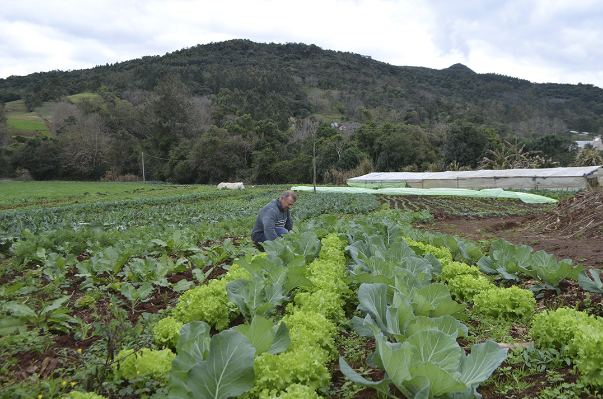
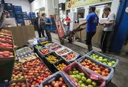

Nossa História
Havia uma pequena comunidade rural chamada Vale Verde, onde as pessoas sempre cultivaram um amor profundo pela terra e pela natureza.

Cercada por montanhas verdesjantes e banhada por riachos cristalinos, essa vila era um refúgio de tranquilidade e harmonia com o ambiente ao redor.
No entanto, como em muitas comunidades rurais, os desafios econômicos eram uma realidade constante.

Finalmente, chegou o dia da manifestação da Cooperativa Verdejante. Sob um céu azul salpicado de nuvens brancas, os agricultores se reuniram ao redor da mesa de
exposição, exibindo suas colheitas frescas e saudáveis. Os moradores da vila vieram em massa para apoiar essa iniciativa, encantados com a qualidade e o sabor dos produtos
orgânicos locais. Desde então, a Cooperativa Verdejante tornou-se o coração pulsante da comunidade de Vale Verde. Não apenas proporcionou meios de subsistência sustentáveis
para os agricultores locais, mas também fortaleceu os laços de solidariedade e cooperação entre os habitantes da vila. Hoje, quando o sol se põe sobre os campos verdesjantes
e Vale Verde, o legado da Cooperativa Verdejante continua a crescer, como uma semente plantada que floresce em um jardim de esperança, sustentabilidade e comunidade.